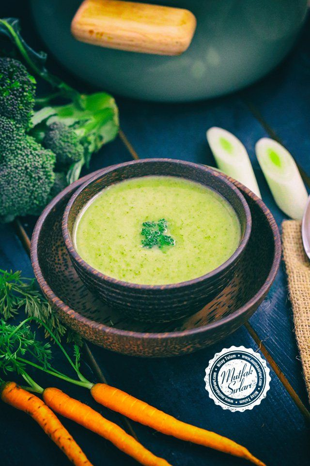
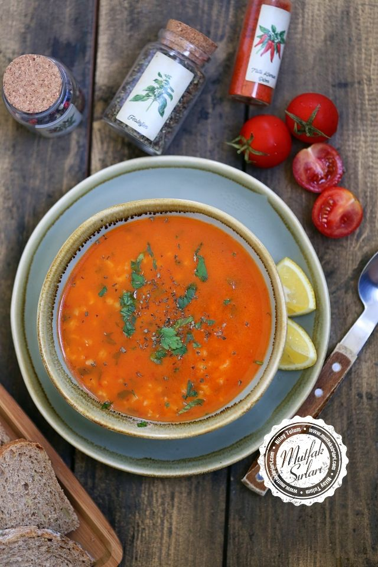
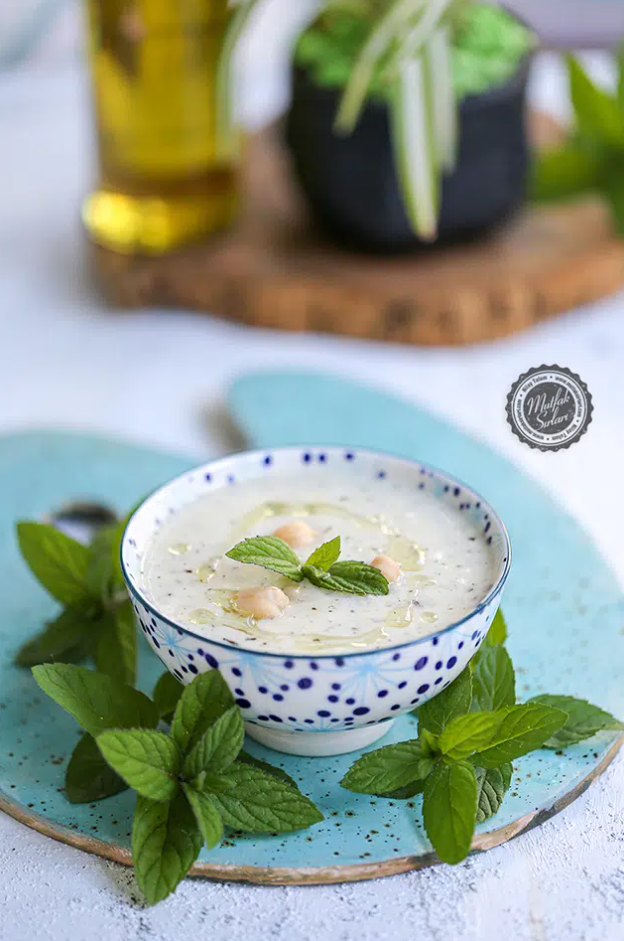

Brokoli Çorbası
{kind=link}
Çiçeklerine ayrılmış brokoliyi suyla birlikte tencereye alıp yumuşayana kadar haşlayın, Ayrı bir tencerede tereyağını eritin, Unu ekleyip kavurun, Üzerine suyuyla beraber brokoliyi ekleyip karıştırın, Blenderdan geçirip sütünü ekleyin ve 2-3 dk. daha kaynatın, Tuzunu ekleyip karıştırın ve ateşten alın, Üzeri için tereyağını eritip naneyi ekleyin ve karıştırıp ateşten alın, Sosu çorbanın üzerine gezdirip karıştırın.
Domates Çorbası
{kind=link}
Domates çorbası yapımı için öncelikle domateslerin kabuğunu soyup, mutfak robotundan geçirin. Derin bir tencerede tereyağını eritin. Eriyen tereyağı üzerine unu ekleyin ve kavurun. Kavrulan unun üzerine domates salçasını ilave edin. Ardından mutfak robotundan geçirdiğiniz domatesleri ekleyin. Malzemeleri iyice karıştırarak kavurun. Domatesler de kavrulduktan sonra suyunu ilave ederek pişirmeye bırakın. Kaynayan çorbaya sütünü de ekleyin. Tuzunu da ilave ettikten sonra birkaç dakika daha kaynatarak ocaktan alın. Servis esnasında üzerine rendelenmiş kaşar peyniri serpin. Afiyet olsun.
Tom Kai Gai Çorbası
 _ So Much Food.jpeg)
Hindistan cevizi sütünü tencereye alın. İçine ince doğradığınız biberleri ekleyip yüksek ateşte kaynatın. O esnada tavuğu küp küp doğrayın. Zencefili incecik kıyın. Limon otunu, misket limonu yapraklarını ve kişnişi ince ince doğrayın. Yeşillikleri de çorbaya ekleyip pişmeye devam edin. Domatesi küp küp, mantar ve taze soğanları da ince ince doğrayın. Bu malzemeleri de çorbaya ekleyip birkaç dakika daha kaynatın. Misket limonunun suyu ile balık sosunu da ekleyin. Kıvamı çok koyu olursa ya da çok acı olursa biraz Hindistan cevizi sütü ilave edebilirsiniz. Servis ederken üzerini kişniş yapraklarıyla süsleyebilirsiniz. Afiyet olsun…
Yayla Çorbası
{kind=link}
Çorbanız için suyu tencereye koyun ve kaynatın. Pirinçleri de ayıklayıp yıkayın. Su kaynayınca pirinçleri ilave edin ve yumuşayana kadar haşlayın. Diğer bir taraftan da un, yumurta ve yoğurdu güzelce çırpın. Eğer koyu kıvamlı bir çorba istemiyorsanız unu eklemeyebilirsiniz. Kaynayan sudan yoğurtlu ve yumurtalı karışıma azar azar ekleyip ılıştırın. Daha sonra tencereye ilave edip 10 dakika kadar karıştırarak pişirin. Altını kapattıktan sonra tuzunu ekleyin. En son tereyağını kızdırıp naneleri içinde bir çevirdikten sonra çorbanın üzerine gezdirin. Dilerseniz çorbanızı pirinç yerine şehriye veya haşlanmış buğdayla da hazırlayabilirsiniz.
Mercimek Çorbası
 – Mutfak Sırları – Pratik Yemek Tarifleri.png)
Yemeklik olarak doğranan soğanlar tencerede kavrulur. Un ilave edilerek karıştırılır. Salça kullanacaksınız salça ilavesi yapılır. Küp doğradığınız havuç ve mercimekler ilave edilerek üzerine su eklenir. Havuçlar yumuşadıktan sonra blenderden çorba çekilir. Dilerseniz karabiber, tuz ve kimyon ekleyebilirsiniz. Kıvamı koyu gelirse bir miktar su ekleyebilirsiniz. Sosunu tavada hazırlayıp servis ederken kaselere dökebilirsiniz.